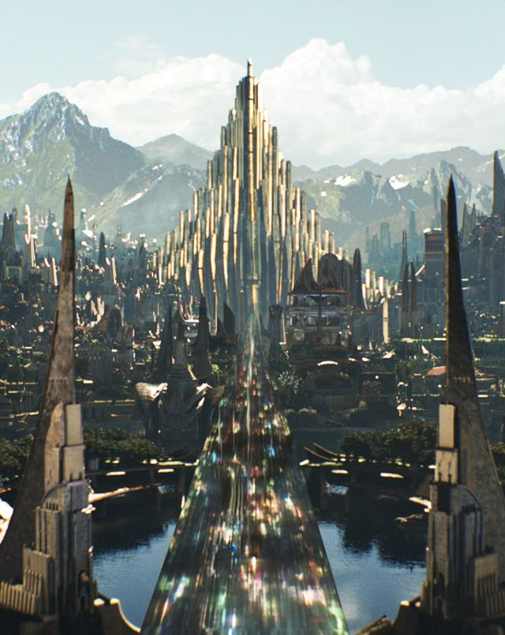
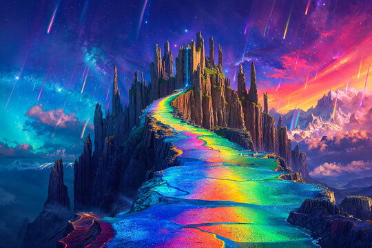
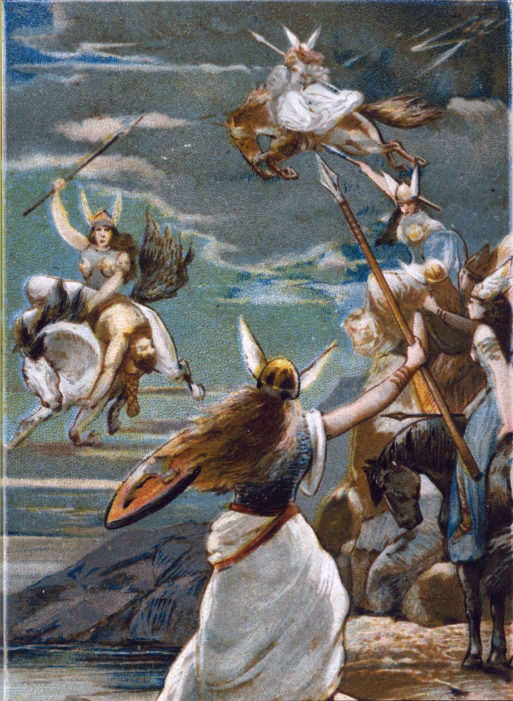

GodenrijkAsgaard is de mythische wereld in de Noorse mythologie waar de Aesir-goden wonen – machtige figuren als Odin, de wijze oppergod, Thor, de dondergod, en Frigg, de godin van wijsheid en moederschap. Deze wereld is gebouwd hoog boven de aarde en is een plaats van immense schoonheid, magie en kracht. Asgaard is niet alleen het politieke centrum van de goden, maar ook een symbool van orde in het universum. |
 |
|  |
De BifröstDe toegang tot Asgaard wordt bewaakt door Bifröst, een magische regenboogbrug die straalt in felle kleuren en constant in beweging lijkt. Deze brug verbindt de wereld van de mensen (Midgard) met die van de goden. Alleen de goden – en af en toe een uitverkorene – mogen deze brug oversteken. Heimdall, de alziende wachter met scherpe zintuigen, staat dag en nacht paraat om indringers tegen te houden. Bifröst is niet alleen een poort, maar ook een symbool van de verbinding tussen stervelingen en het goddelijke. |
WeetjeAsgaard is niet zomaar een paradijs – het is een plek waar eer, moed en lotsbestemming centraal staan. In Valhalla, de grote zaal van gevallen helden, verzamelt Odin de dapperste krijgers (de Einherjar) om zich voor te bereiden op Ragnarök: de eindtijd, wanneer goden en reuzen zullen strijden om het lot van de wereld. Deze kosmische strijd maakt Asgaard tot een wereld vol spanning en verwachtingen – een rijk waar elke dag telt in de aanloop naar het onvermijdelijke. |
 |